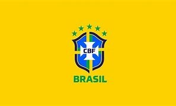

Seleção Brasileira
Expectativa do Tite para a Copa
Após a divulgação dos selecionados para defender o Brasil na Copa do Mundo do Catar, o técnico Tite revelou o que espera para o Mundial. Com as altas expectativas criadas pela Seleção Brasileira, o treinador demonstrou ter os pés no chão, mas afirmou que está confiante no trabalho que vem sendo feito. Para ele, a confiança do torcedor no hexacampeonato é fruto de uma sequência de trabalho, que começou há quatro anos e, por isso, é consistente. No cargo desde 2016, o treinador da Seleção Brasileira tem apenas cinco derrotas em 76 jogos. Foram 58 vitórias e 13 empates
"Talvez essa confiança e o desempenho dos atletas tenham gerado essa relação com o torcedor, mas eu não tenho marcado que é (favorita). Vejo a crescente expectativa como muito boa", revelou o técnico brasileiro na sede da Confederação Brasileira de Futebol (CBF), no Rio de Janeiro (RJ). "A gente assume que o Brasil é, sim, um dos favoritos, e a minha opinião é que é um dos meu favoritos", completou.Convocados para a Copa
Jogos do brasil: Horarios e Datas
- Brasil x Sérvia - 24 de novembro (quinta-feira), às 16h - Lusail Stadium.
- Brasil x Suíça - 28 de novembro (segunda-feira), às 13h - Stadium 974.
- Camarões x Brasil - 2 de dezembro (sexta-feira), às 16h - Lusail Stadium.

(09/12/22)
Brasil Perde Copa do Mundo
A derrota para a Croácia na disputa de pênaltis decretou a eliminação do Brasil nas quartas de final da Copa do Mundo. Na tarde desta sexta-feira (9), o Brasil disputou 131 minutos, 90 do tempo normal, outros 30 da prorrogação e mais 11 de acréscimos. Dominou boa parte da partida, mas o primeiro tempo, que começou com um chute de Vini Júnior, não foi bom. A Croácia é atual vice-campeã mundial e conta com vários destaques no futebol europeu, o principal, Modric, camisa 10, que ditou o ritmo. Era o jogo mais difícil até aqui. Nas últimas cinco Copas, incluindo essa de 2022, o Brasil caiu quatro vezes exatamente nessa fase, de quartas de final. E no Catar, foi eliminado por um adversário que aprendeu a não desistir nunca. O Brasil volta para casa mais cedo e terá que esperar até 2026 para tentar de novo.

Andrey Ortencio n°04 Victor Cirqueira n°36